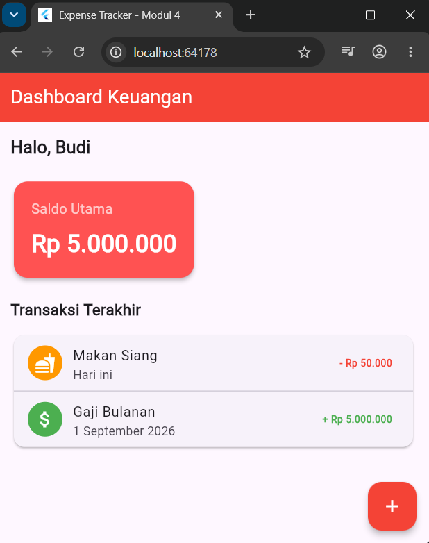
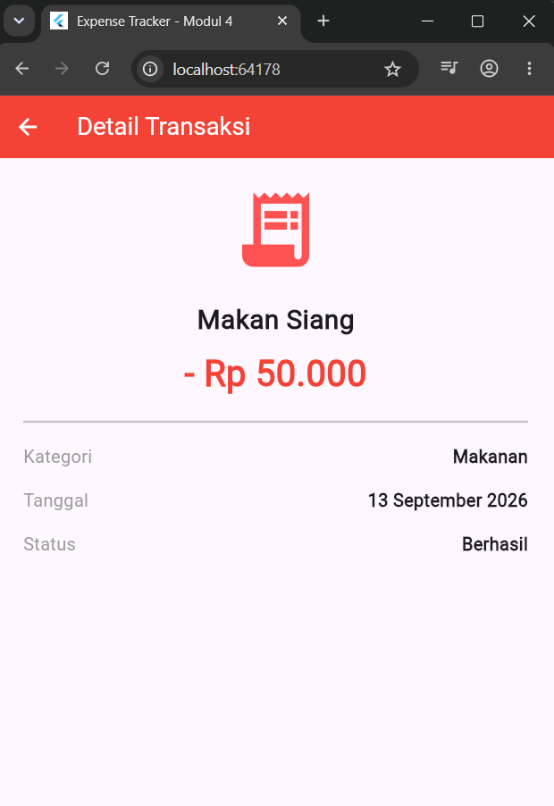
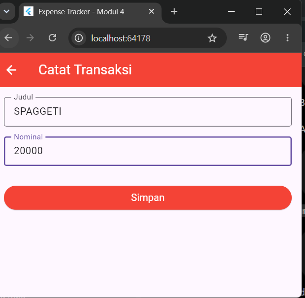
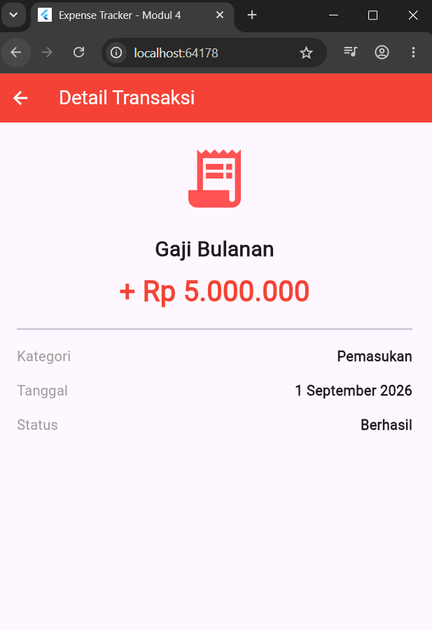
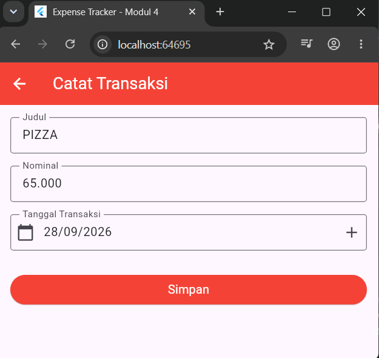
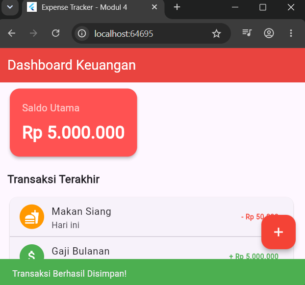

Gambar 1. Tampilan Dashboard Keuangan
"Navigasi & Passing Data Navigator, Konsep Stack, dan Constructor"
Implementasi navigasi antarhalaman pada Flutter menggunakan Navigator, konsep Stack, constructor, passing data, serta input tanggal menggunakan showDatePicker.
Mata Kuliah
Praktikum
Project
Topik
Repository
Folder
Praktikum ini bertujuan untuk memahami dan menerapkan navigasi antarhalaman pada Flutter menggunakan Navigator, konsep Stack, constructor, passing data, form transaksi, dan validasi input.
1. Memahami konsep Navigator pada Flutter.
2. Memahami Navigator.push().
3. Memahami Navigator.pop().
4. Memahami konsep Stack dalam navigasi.
5. Memahami constructor pada widget.
6. Memahami passing data antar halaman.
7. Membuat halaman Dashboard.
8. Membuat halaman Catat Transaksi.
9. Membuat halaman Detail Transaksi.
10. Membuat input tanggal menggunakan showDatePicker().
11. Menerapkan validasi form.
Navigator merupakan widget Flutter yang digunakan untuk mengatur perpindahan antar route atau halaman. Dalam konsep navigasi, halaman baru ditumpuk di atas halaman sebelumnya seperti stack.
Halaman yang terakhir dibuka berada di atas stack.
Push digunakan untuk membuka halaman baru dan menempatkannya di atas halaman yang sedang aktif.
Navigator.push(
context,
MaterialPageRoute(
builder: (context) => const AddTransactionScreen(),
),
);Bagian penting dari kode di atas adalah context yang mengacu pada lokasi navigasi saat ini dan MaterialPageRoute yang menentukan halaman tujuan.
Pop digunakan untuk menutup halaman aktif dan kembali ke halaman sebelumnya.
Navigator.pop(context);Dalam aplikasi Expense Tracker, setelah form validasi berhasil, halaman Catat Transaksi ditutup dan pengguna kembali ke Dashboard.
Flutter menggunakan struktur stack dalam navigasi. Halaman yang paling baru dibuka berada di posisi paling atas.
Data transaksi dikirim dari Dashboard ke halaman Detail melalui constructor. Parameter dibuat required agar data wajib diberikan saat widget dibuat.
const TransactionDetailScreen(
title: 'Makan Siang',
amount: '- Rp 50.000',
category: 'Makanan',
date: '13 September 2026',
);Data yang dikirim pada halaman detail meliputi title, amount, category, dan date.
lib/
├── main.dart
├── dashboard_screen.dart
├── add_transaction_screen.dart
└── transaction_detail_screen.dartEntry point aplikasi dan menentukan DashboardScreen sebagai halaman awal.
Menampilkan Dashboard Keuangan, saldo, transaksi, dan tombol tambah.
Halaman untuk masuk data transaksi dan proses validasi form.
Halaman detail transaksi yang menerima data melalui constructor.
import 'package:flutter/material.dart';
import 'dashboard_screen.dart';
void main() {
runApp(const MyApp());
}main.dart merupakan entry point aplikasi. Bagian penting adalah home: const DashboardScreen(), yang menentukan Dashboard sebagai halaman pertama yang dibuka.
Dashboard dibuat dengan beberapa komponen utama: AppBar, sapaan pengguna, saldo utama, daftar transaksi, serta FloatingActionButton.
floatingActionButton: FloatingActionButton(
backgroundColor: Colors.red,
foregroundColor: Colors.white,
child: const Icon(Icons.add),
onPressed: () {
Navigator.push(
context,
MaterialPageRoute(
builder: (context) => const AddTransactionScreen(),
),
);
},
),Ketika tombol + ditekan, Navigator.push() digunakan untuk membuka halaman Catat Transaksi. MaterialPageRoute menandai widget tujuan yang akan dibuka.
Saat tombol + pada Dashboard ditekan, aplikasi menggunakan Navigator.push() untuk membuka halaman AddTransactionScreen. Halaman baru diletakkan di atas stack, sehingga halaman sebelumnya masih tersedia di bawahnya.
Navigator.push(
context,
MaterialPageRoute(
builder: (context) => const AddTransactionScreen(),
),
);Halaman Catat Transaksi menggunakan GlobalKey<FormState>, TextEditingController, serta TextFormField untuk mengambil dan memvalidasi input pengguna.
final _formKey = GlobalKey<FormState>();
final _titleController = TextEditingController();
final _amountController = TextEditingController();Controller digunakan untuk mengambil nilai dari input. Validasi form dilakukan dengan validator untuk memastikan judul dan nominal tidak kosong.
validator: (value) =>
value!.isEmpty ? "Tidak boleh kosong" : null,
if (_formKey.currentState!.validate()) {
ScaffoldMessenger.of(context).showSnackBar(
const SnackBar(
content: Text('Transaksi Berhasil Disimpan!'),
backgroundColor: Colors.green,
),
);
Navigator.pop(context);
}Jika validasi berhasil, SnackBar ditampilkan dan Navigator.pop() dipanggil untuk kembali ke Dashboard.
File transaction_detail_screen.dart didefinisikan sebagai StatelessWidget dengan variabel dan constructor yang menerima data dari halaman sebelumnya.
class TransactionDetailScreen extends StatelessWidget {
final String title;
final String amount;
final String category;
final String date;
const TransactionDetailScreen({
super.key,
required this.title,
required this.amount,
required this.category,
required this.date,
});
}Masing-masing parameter menerima data yang dikirim dari Dashboard, sehingga halaman Detail dapat menampilkan informasi sesuai transaksi yang dipilih.
TransactionDetailScreen(
title: 'Makan Siang',
amount: '- Rp 50.000',
category: 'Makanan',
date: '13 September 2026',
)Data dikirim saat Navigator.push() membuat halaman detail. Dengan demikian, halaman tujuan dapat menampilkan informasi yang sesuai dengan transaksi yang dipilih.
Pada latihan, ditambahkan input Tanggal Transaksi sebelum tombol Simpan. Ketentuannya adalah menggunakan TextFormField, format DD/MM/YYYY, tombol + untuk memilih tanggal, dan validasi agar tanggal wajib diisi.
Future _selectDate(BuildContext context) async {
final DateTime? pickedDate = await showDatePicker(
context: context,
initialDate: DateTime.now(),
firstDate: DateTime(2000),
lastDate: DateTime(2100),
);
if (pickedDate != null) {
final String day = pickedDate.day.toString().padLeft(2, '0');
final String month = pickedDate.month.toString().padLeft(2, '0');
final String year = pickedDate.year.toString();
setState(() {
_dateController.text = '$day/$month/$year';
});
}
} showDatePicker membuka kalender, pickedDate menyimpan tanggal yang dipilih, lalu date diformat menjadi DD/MM/YYYY dengan setState() memperbarui TextFormField.
TextFormField(
controller: _dateController,
readOnly: true,
decoration: InputDecoration(
labelText: "Tanggal Transaksi",
border: const OutlineInputBorder(),
prefixIcon: const Icon(Icons.calendar_today),
suffixIcon: IconButton(
icon: const Icon(Icons.add),
onPressed: () {
_selectDate(context);
},
),
),
validator: (value) {
if (value == null || value.isEmpty) {
return "Tanggal transaksi wajib diisi";
}
return null;
},
)Field tanggal menggunakan controller untuk menampilkan hasil pemilihan dari popup kalender. readOnly membuat input tidak bisa diketik manual, sementara validator memastikan tanggal wajib diisi.
| No | Pengujian | Input / Aksi | Hasil |
|---|---|---|---|
| 1 | Membuka aplikasi | Run aplikasi | Dashboard tampil |
| 2 | Membuka Catat Transaksi | Klik tombol + | Halaman Catat Transaksi tampil |
| 3 | Input transaksi | SPAGGETI, 20000 | Data diterima form |
| 4 | Simpan transaksi | Klik Simpan | SnackBar berhasil tampil |
| 5 | Detail Makan Siang | Klik Makan Siang | Detail tampil |
| 6 | Detail Gaji Bulanan | Klik Gaji Bulanan | Detail tampil |
| 7 | Input tanggal | Pilih 28/09/2026 | Tanggal tampil |
| 8 | Validasi tanggal | Kosongkan tanggal | Validasi dijalankan |
Berhasil menerapkan perpindahan halaman menggunakan Navigator.
Berhasil memahami mekanisme push dan pop.
Berhasil mengirim title, amount, category, dan date melalui constructor.
Berhasil menerapkan validasi pada input transaksi.
Berhasil menerapkan showDatePicker() dan format DD/MM/YYYY.

Gambar 1. Tampilan Dashboard Keuangan

Gambar 2. Halaman Catat Transaksi

Gambar 3. Detail Transaksi Makan Siang

Gambar 4. Detail Transaksi Gaji Bulanan

Gambar 5. Implementasi Input Tanggal Transaksi

Gambar 6. Hasil Submit Transaksi
Pada Praktikum Mobile Application 4 telah berhasil diterapkan konsep navigasi antarhalaman pada Flutter menggunakan Navigator, Navigator.push(), Navigator.pop(), konsep Stack, constructor, dan passing data. Aplikasi Expense Tracker memiliki halaman Dashboard, Catat Transaksi, dan Detail Transaksi. Data transaksi dapat dikirim dari Dashboard ke halaman Detail melalui constructor.
Pada latihan, berhasil ditambahkan input Tanggal Transaksi menggunakan TextFormField, tombol +, showDatePicker(), format DD/MM/YYYY, serta validasi agar tanggal wajib diisi.